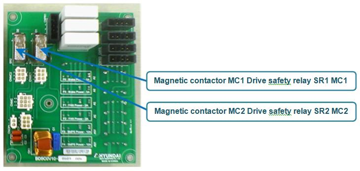

1.1.19.1. Outline
Motor¡¯s power supply is supplied to the AMP according to the open/close status of Magnetic contactor MC1, and MC2.
Status of MC1 and MC2 are being monitored by Main¡¯s conditions and E0127 (MSHP operation error) or E0140 (MSPR operation error) will be generated when an abnormal operation is detected.
(1) E0140 (MSPR operation error)
For a reason that cannot be identified by Main, the Magnetic contactor MC1
¨ç Does not turn On while an attempt is made,
¨è Turns off while it should stays on
(2) E0127 (MSHP operation error)
For a reason that cannot be identified by Main, the Magnetic contactor MC2
¨ç Does not turn On while an attempt is made,
¨è Turns off while it should stays on
In order for MC1 or MC2 to on, many conditions need to be satisfied, and even if when they are on, they can be off for some reasons. Main can identify the causes for Magnetic contactor¡¯s operation error if it is a case that provides a monitoring function such as safety signals. However if the main cannot identify the Magnetic contactor¡¯s operation error, a number of examines are required.
1.1.19.2. Causes and examine methods
|
(1) Command system malfunction n Error on receiving data from the Main n CPUERR or EXOUT signal has occurred, or an error of the corresponding line n Old system I/O Board (BD531V10) is used from the remote mode n Error on the safety signal system n Error that occurred due to the safety related unit¡¯s wiring malfunction n System Board malfunction
(2) Monitoring system malfunction n Cabling (Wire, Connector etc.) malfunction n Electrical Module malfunction n System Board malfunction
(3) Other malfunction n Case when E0043 and E0140 both occurs at the same time |
To identify the cause of these two errors (MSPR operation error, and MSHP operation error), you must understand the Motor¡¯s power supply insertion system. Basic concept of Motor¡¯s power supply to the Amp (Drive Unit) is as below.
Main will send out the MC1 Motor power on 1 command (MCON1) and waits (while monitoring the sub point of contact) until the MC1 is activated. At this stage, if the MC1 does not activates within certain amount of time, E0140 (MSPR operation error) will occur. On the other hand, if MC1 successfully operated, Main will send out the MC2 Motor power on 2 command (MCON2) and waits (while monitoring the sub point of contact) until the MC2 is activated. Again, if the MC1 does not activates within certain amount of time, E0127 (MSHP operation error) will occur.
If the Magnetic contact MC1 and MC2 turns on according to the Main¡¯s command, AC220V R, S, T 3-phase power supply will be supplied to the Amp.
While the motor is on, the Main will monitor if the MC1, and MC2¡¯s status is on at all time.
If the Magnetic contact goes off for a reason that cannot be identified by the Main, these errors will occur.
Figure 1.82 Concept Diagram of Safety Circuit for Motor Power¡¯s Opening/Closing
(1) Command system malfunction
Motor on command from the main has been blocked for some reason, if you do not hear any sound of operation and a message of ¡®MSPR operation error¡¯ is displayed while the motor on attempt is made.
n Error on receiving data from the Main
If a communication error occurs between the Main Board and the System Board, the System Board will block the Motor On command for a safety reason. Generally the Main Board also detects the communication error at the same time, so the MSPR operation error or MSHP operation error will not occur. However if the Main cannot detect the communication error, these errors can be generated. This is a case when the control status of safety switch related components (Teach Pendant emergency stop switch input, OP panel¡¯s emergency stop switch input) are being transmitted to the Main Board, but output from the Main Board (Motor ON) will not be transmitted to the System so the hardware wise Motor On command is cannot be executed.
Figure 1.83 7-SEG Indicator of the System Board when a Communication Error Occurs
¨ª How to judge:
System Board¡¯s 7-segment index may give you an indication of the situation. 7-segment displays ¡°o.¡± to indicate that the current communication with the Main Board is in abnormal status.
¨ª Actions:
Firstly, please restart the controller and observe if the same error persists. If it does, the communication input unit of the System Board has an error. Please replace the System Board.
n CPUERR or EXOUT signal has occurred, or an error of the corresponding line
Main Board generates CPUERR or EXOUT signals in a case when systemic error has occurred (e.g. power shut down, Servo error). This signal will be transferred to the System Board and block the motor on command in terms of hardware. Motor¡¯s power will be immediately shut down for a safety reason. However, these signals may be generated abnormally, and it will shut down the motor¡¯s power.
¨ª How to judge:
System Board¡¯s 7-segment index may give you an indication of the situation. 7-segment displays ¡°H.¡± when CPUERR is being transmitted to the System Board. Also the CPUERR, EXOUT LED which located at the center of the System Board indicate the error situation (Figure 1.84) These LED lights will be on if it is a normal status, and the lights will be off if it is not.
However if the signal appears time to time for a very short moments, 7-segment and LED won¡¯t be able to indicate it. In such case, error occurrence must be observed while ignoring the two signals by using DIP switch SW1. Method to ignore the signal is to, as shown in the Figure 6.91, turn on the No 1 (to ignore CPUERR) and the No 2 (to ignore EXOUT) of the DIP switch SW1. At this point all LED lights will be on.
If the error no longer persists after the system restart, Main Board generated these signals or CANS1 Connector/Cable malfunction is suspected.
Figure 1.84 Indication of 7-SEG, LED (on System Board) when CPUERR Error is Occurred
¨ª Actions:
If a Main Board generating this signal without any other indication of errors, please check the PLD version of the Main Board. Over V0.7 is normal. If Main Board¡¯s PLD version is normal, please examine the CANS1 connector and cables.
n Old system I/O Board (BD531V10) is used from the remote mode
If an old system IO board (BD531V10) is used on a remote mode, this error may occur. Motor on command will not be executed because this type of board does not have remote mode function.
Figure 1.85 Checking Method of Old System I/O Board (BD531V10)
¨ª How to judge:
This board is attached at the back of the System Board. Please remove the System Board from Electrical Module and check the system I/O board number at the back (Figure 1.85).
¨ª Actions:
If the installed board is ¡°BD531V10¡±, please replace it with a board with the hardware version above ¡°BD531V11¡±.
n Error on the safety signal system
Motor on command from the main has been blocked for some reason, if you do not hear any sound of operation and a message of ¡®MSPR operation error¡¯ is displayed while the motor on attempt is made without any other error messages.
The motor on command will not be executed if there is a problem on a safety signal system as explained earlier (Figure 1.82). Safety devices (Safety guard, emergency stop switch etc) are mechanically operating devices, but their monitoring is operated electronically. So a safety device malfunction, or any electronic shock (noise, surge), wiring error, short circuit can cause an error. To confirm, please remove the connected safety device¡¯s wiring and rewire them to ignore the input.
Figure 1.86 Method to Ignore the External Emergency Stop Input
Figure 1.87 Method to Ignore the Safety Guard (Auto) Input
Figure 1.88 Method to Ignore the Safety Guard (General) Input
Figure 1.89 Method to Ignore the (P-COM input) External Emergency Stop (3,4 of SW6 is ON)
Figure 1.90 Method to Ignore the (P-COM) Safety Guard (Auto) (1,2 of SW6 is ON)
As explained, if the error does not persist when these safety switch inputs are ignored, the problem exists in the safety switches and wirings. Please check them.
n Error that occurred due to the safety related unit¡¯s wiring malfunction
If there is a problem in a wiring of devices that are related to the safety such as Safety guard(Auto), the error for a corresponding safety signal may not be detected and it will generate E0140 (MSPR operation error).
This error occurs from a waiting of manual mode drive preparation (Status that the Teach Pendant¡¯s motor on LED is flickering) switches to automatic mode, and motor on attempt is made on an automatic mode.
For example, there is a case when the wiring of Safety guard (Auto) is faulty. There are two types of input method (point of contact input, P-common input) that enters safeguard to the System Board (BD530) and the point of contact input¡¯s wiring error may cause a problem. Proper wiring separates each safe chain and connects the each end of point of contact (Figure 6.98) However if the chain¡¯s wiring is mixed and connected, the controller will not be able to detect the Safety guard¡¯s error due to an electronic error (Figure 6.99). If the motor on is attempted at this time, not sufficient power supply for Magnetic contactor¡¯s safe relay operation will be supplied and it will generate E0140 (MSPR operation error).
¨ª How to judge:
Phenomenon of Safety guard wiring malfunction is as below.
l If a safe chain connection is removed (5, 6 wiring or 7, 8 wiring), Safety guard error will be detected in automatic mode and displays E0043 error.
l However, if all chains are connected (5, 6, 7, 8 wiring are all connected), Safety guard error will not be detected in automatic mode (E0043 error does not occur).
If the above phenomenon appears, please examine the Safety guard (Auto)¡¯s wiring. Firstly, please remove the terminal block TBEM from the board, and perform a short circuit test from a removed terminal block connector¡¯s (TBEM) safeguard input terminal (socket) while activating the guard device.
l If you close the guard device (point of contact – close status), 5, 6 terminal (socket) will be shorted. Also 7, 8 terminal (socket) will be shorted.
l If you open the guard device (point of contact – open status), 5, 6 terminal (socket) will be open. Also the 7, 8 terminal (socket) must be open status.
Figure 1.91 Good example of Safety Guard (Auto) wiring
Figure 1.92 Bad example of Safety Guard (Auto) wiring
¨ª Actions: Please modify the wiring of Safety guard (Auto) correctly (Figure 6.99)
Error occurrence caused by the wiring error of safeguard has been explained in above. This applies same to all safety related signals (Safety guard (General), Safety guard (Auto), external emergency stop switch, various limit switches), so please refer to (table 6-5) to compare the normal and abnormal wiring examples.
Table 1-5 Error on safety related device¡¯s wiring
|
Classification |
Normal wiring |
Abnormal wiring |
|
External emergency stop switch |
|
|
|
Safety guard (Auto) |
|
|
|
Safety Guard (General) |
|
|
n System Board malfunction
When motor on is attempted, if you do not hear the activating sound of controller¡¯s internal Magnetic contactor (MC1) and a message of ¡°MSPR operation error¡± is displayed, please examine all the above. If no problem is found from the above examinations and same error persists, System Board malfunction might be the cause. Please replace it.
(2) Monitoring system malfunction
When motor on is attempted, if you do hear the activating sound of controller¡¯s internal Magnetic contactor and a message of ¡°MSPR operation error¡± or ¡°MSHP operation error¡± is displayed, the cause of an error might be the Monitoring system malfunction. In order to confirm the Monitoring system malfunction, please do as below.
The status of Magnetic contactor MC1 and MC2 is monitored by using the sub point of contact and can be accessed by the Teach Pendant. (Figure 1.93) From the Teach Pendant, MC1 (PreCharge) and MC2 (Motors Power) signal can be accessed by Private input signal monitoring window. Motor off status will be displayed as a white color background and motor on status will be displayed as yellow color background.
Figure 1.93 Method of Magnetic Contactor Monitoring
Please attempt the motor on in automatic or manual mode and confirm the activation sound of the Magnetic contactor as well as the displayed status of MC1, and MC2.
n At first, if MC1 is displayed with a yellow color for a moment (with the sound of Magnetic contactor¡¯s activation) and E0140 (MSPR operation error) message is appears, it means that there is no error in MC1¡¯s sub point of contact and the monitoring system.
n After the activation of MC1, if MC2 is displayed with a yellow color for a moment (with second sound of Magnetic contactor¡¯s activation) and E0127 (MSHP operation error) message is appears, it means that there is no error in MC1¡¯s sub point of contact and the monitoring system.
With the above methods, if you confirmed that the monitoring of MC1 and MC2 is not working (Monitoring signal is not displayed in yellow while you can hear the sound of Magnetic contactor¡¯s activation), the following devices has to be examined (Figure 1.94).
¨ç Cable CNMC
¨è Electrical Board relay SR1, SR2 (inside of Electrical Module)
¨é Sub point of contact for MC1 and MC2 – Magnetic contactor (inside of Electrical Module)
¨ê Wiring between the Electrical Board and the Magnetic contactor (inside of Electrical Module)
¨ë System Board (input signal processing unit)
Figure 1.94 Diagram of the Monitoring System – Magnetic Contactor
n Cabling (wires, connector etc) malfunction
Please check the cabling between the Electrical Module (PSM or PDM) that an electrical connector is installed and the System Board (BD530) that collects monitoring signals.
The cable name is CNMC and it enters to the Electrical Module through the top rear of the System Board (Figure 1.95). Please check the connection status of this cable¡¯s connector.

Figure 1.95 CNMC Cable on the Electrical Module
n Electrical Module malfunction
Monitoring signal of the Magnetic contactor is transmitted to the System Board through many devices that are inside of the Electrical Module. So if one of those devices has an error, the Main will not be able to detect even if the Magnetic contactor is operated. Internal electrical module malfunction can be categorized as a electrical board (BD5C2 or BD5C0), Electrical connector (MC1, MC2), and wirings between the electrical board and the electrical connector (Figure 1.96) However it is difficult to examine the inside of Electrical Module in a field where a Robot has already been installed, so alternatively please replace the Electrical Module
Figure 1.96 Inner Structure of Electrical Module

Figure 1.97 Electrical Board
n System Board malfunction
Input signal process unit malfunction of the System Board can be the cause of this error. Please replace the System Board and check.
(3) Other malfunction
n Case when E0043 and E0140 both occurs at the same time
E0043(Safety Plug or Light Curtain) with the E0140(MSPR operation error) can occurs from a waiting of manual mode drive preparation (Status that the Teach Pendant¡¯s motor on LED is flickering) switches to automatic mode, and motor on attempt is made when the Safety guard (Auto) is open (and the Main software version is below V30.07-00). Please check the Main software version from the Teach Pendant and upgrade if the version is low.